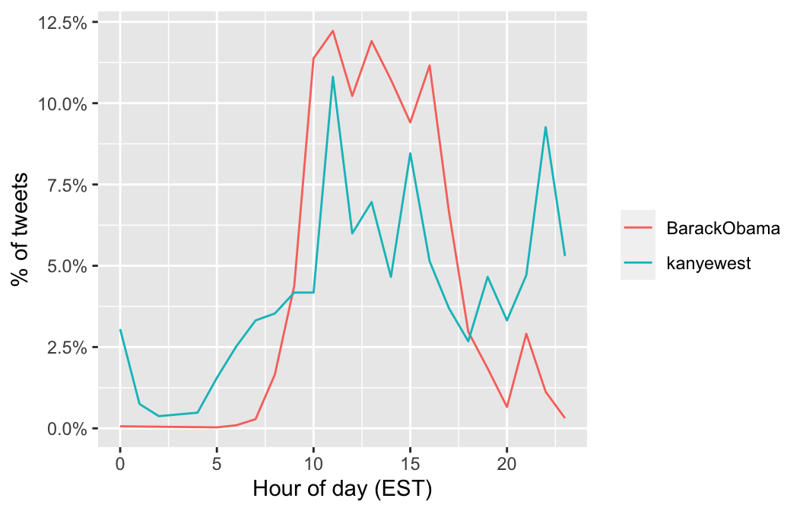
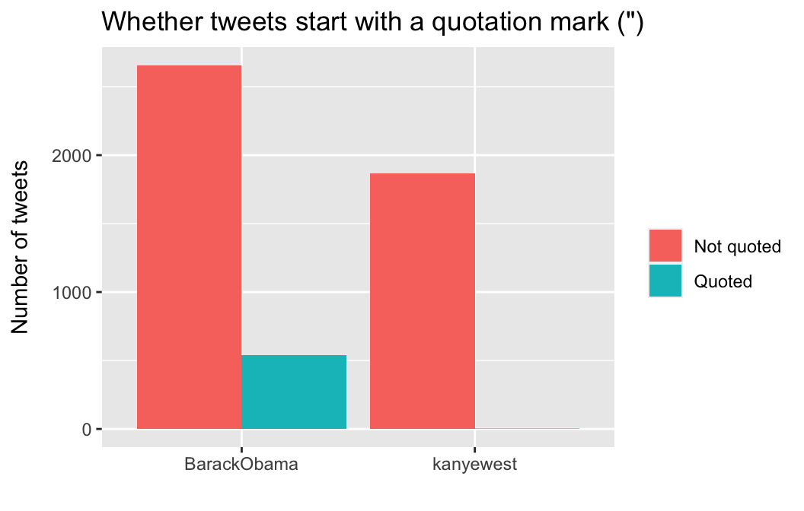
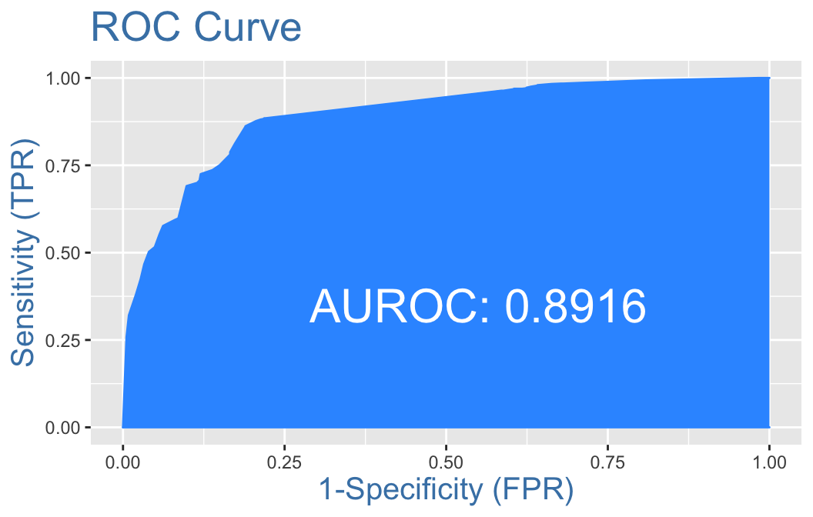

\[\\[.01in]\]
library(rtweet)
library(httpuv)
library(tidytext)
library(tidyverse)
library(dplyr)
library(lubridate)
library(ggplot2)
library(scales)
library(readr)
library(syuzhet)
library(mlbench)
library(caret)
library(vtreat)
library(InformationValue)## Setting up authentication to get to twitter
twitter_token <- create_token(
app = "Classwork for BDS 516",
consumer_key = "W30dWiQN5oTkPBRGE9CYEyidm",
consumer_secret = "23xMeQn3rvircKaGWcbLlO7lhrXKIanpH3nsZMrzyZUD3Pe3JF",
access_token = "1148924254966226945-jBqguRa05UmaF4HsujuERFo6KeBwtu",
access_secret = "nAi2Y3fD1k6odmn1OVmuM6R32Q7UBVxiMpkWTEypckEWz")
## Getting tweets from Obama and Kanye
obama_raw <- get_timeline("@BarackObama", n = 3200)
kanye_raw <- get_timeline("@kanyewest", n = 3200)
## Cleaning the data sets
# Obama
obama_clean <- obama_raw %>% select("source", "status_id", "text","created_at",
"retweet_count", "favorite_count", "is_retweet", "screen_name")
# Kanye
kanye_clean <- kanye_raw %>% select("source", "status_id", "text","created_at",
"retweet_count", "favorite_count", "is_retweet", "screen_name")
## Saving files as csvs for ease of use
obama_clean <- as.data.frame(obama_clean)
write.csv(x=obama_clean, file="obama_tweets.csv")
kanye_clean <- as.data.frame(kanye_clean)
write.csv(x=kanye_clean, file="kanye_tweets.csv")## Loading in csv files
setwd("~/Documents/*MBDS/BDS 516/Data")
obama <- read_csv("obama_tweets.csv")
kanye <- read_csv("kanye_tweets.csv")\[\\[.01in]\]
obama %>% count(source) %>% arrange(-n)
kanye %>% count(source) %>% arrange(-n)# A tibble: 5 x 2
source n
<chr> <int>
1 Twitter Web Client 2446
2 Twitter for iPhone 473
3 Twitter Web App 199
4 Twitter Media Studio 76
5 Thunderclap 5
# A tibble: 2 x 2
source n
<chr> <int>
1 Twitter for iPhone 1830
2 Twitter Web App 38Obama most frequently tweets from a desktop/laptop while Kanye most frequently tweets from an iPhone.
merged_df <- rbind(obama, kanye)
merged_df %>% group_by(screen_name) %>%
count(hour = hour(with_tz(created_at, "EST"))) %>%
mutate(percent = n/sum(n)) %>%
ggplot(aes(x = hour, y = percent, color = screen_name)) +
labs(x = "Hour of day (EST)", y = "% of tweets", color = "") +
scale_y_continuous(labels = percent_format()) +
geom_line()
The vast majority of Obama’s tweets are posted between 10am and 4pm, while, Kanye’s tweets have much more variability.
## Plot of tweets with quotes vs. no quotes
merged_df %>% group_by(screen_name) %>%
count(quoted = ifelse(str_detect(text, '^"'), "Quoted", "Not quoted")) %>%
ggplot(aes(x = screen_name, y = n, fill = quoted)) +
geom_bar(stat = "identity", position = "dodge") +
labs(x = "", y = "Number of tweets", fill = "") +
theme(axis.title.y = element_text(margin = margin(t = 0, r = 10, b = 0, l = 0))) +
ggtitle('Whether tweets start with a quotation mark (")')
# Table of tweets with quotes vs. no quotes
merged_df %>% group_by(screen_name) %>%
count(quoted = ifelse(str_detect(text, '^"'), "Quoted", "Not quoted")) %>%
mutate(percent_quote = n/sum(n)*100)# A tibble: 4 x 4
# Groups: screen_name [2]
screen_name quoted n percent_quote
<chr> <chr> <int> <dbl>
1 BarackObama Not quoted 2657 83.1
2 BarackObama Quoted 542 16.9
3 kanyewest Not quoted 1865 99.8
4 kanyewest Quoted 3 0.161Both Obama and Kanye do not quote very much in their tweets; however, ~17% of Obama’s tweets use quotes, while Kanye quotes less than 1% of the time.
merged_df %>%
group_by(screen_name) %>%
filter(!str_detect(text, '^"')) %>%
count(picture = ifelse(str_detect(text, "t.co"),
"Picture/link", "No picture/link")) %>%
mutate(percent_picture = n/sum(n)*100)# A tibble: 4 x 4
# Groups: screen_name [2]
screen_name picture n percent_picture
<chr> <chr> <int> <dbl>
1 BarackObama No picture/link 210 7.90
2 BarackObama Picture/link 2447 92.1
3 kanyewest No picture/link 842 45.1
4 kanyewest Picture/link 1023 54.9 The vast majority of Obama’s tweets include a picture or link (92%), while only 55% of Kanye’s tweets contain a picture or link.
merged_df %>% group_by(screen_name) %>%
count(is_retweet) %>%
mutate(perc_retweet = n/sum(n)*100)# A tibble: 4 x 4
# Groups: screen_name [2]
screen_name is_retweet n perc_retweet
<chr> <lgl> <int> <dbl>
1 BarackObama FALSE 2847 89.0
2 BarackObama TRUE 352 11.0
3 kanyewest FALSE 1670 89.4
4 kanyewest TRUE 198 10.6Obama and Kanye have nearly the same percentage of tweets that are re-tweets.
merged_df %>% group_by(screen_name) %>%
summarize(avg_retweet = mean(retweet_count),
avg_fav = mean(favorite_count))# A tibble: 2 x 3
screen_name avg_retweet avg_fav
* <chr> <dbl> <dbl>
1 BarackObama 11367. 58068.
2 kanyewest 9314. 48920.On average, a tweet posted by Obama is re-tweeted ~11,4000 times and is favorited by 60,000 people. For Kanye, the average tweet is re-tweeted ~9,000 times and favorited by ~50,000 people. However, these differences do not seem to be a meaningful metric of comparison given the fact that Obama has 130 million twitter followers, while Kanye has only 30 million.
merged_sentiment <- merged_df %>%
mutate(text2 = str_replace_all(text, "[^[:alpha:]]", " "), # removes all non-alphabetic characters
get_nrc_sentiment(text2)) # getting nrc scores for tweet textsmerged_sentiment %>%
group_by(screen_name) %>%
summarize(anger = mean(anger),
anticipation = mean(anticipation),
fear = mean(fear),
disgust = mean(disgust),
joy = mean(joy),
sadness = mean(sadness),
surprise = mean(surprise),
trust = mean(trust),
negative = mean(negative),
positive = mean(positive)) screen_name anger anticipation fear disgust joy sadness surprise trust negative positive
1 BarackObama 0.315 0.738 0.452 0.100 0.565 0.233 0.284 1.247 0.516 1.778
2 kanyewest 0.148 0.305 0.213 0.071 0.376 0.153 0.120 0.414 0.268 0.742Obama’s tweets (on average) seemingly score higher across all sentiment scores. This is particularly true for “anticipation”, “trust”, and “positive” sentiments
\[\\[.01in]\]
Develop an algorithm that allows to predict who of the politicians tweeted using just the information in the text of the tweet and the time of the tweets. You are not allowed to use the information about the user. You can use sentiments, individual words, punctuation and anything else as a source of features.
model <- glm(is_obama ~ factor(quoted) + factor(picture) +
anticipation + fear + joy + trust + positive,
family = "binomial",
data = obama_kanye3)
summary(model)
Call:
glm(formula = is_obama ~ factor(quoted) + factor(picture) + anticipation +
fear + joy + trust + positive, family = "binomial", data = obama_kanye3)
Deviance Residuals:
Min 1Q Median 3Q Max
-4.2721 -0.5638 0.1219 0.6557 2.7422
Coefficients:
Estimate Std. Error z value Pr(>|z|)
(Intercept) -3.73624 0.14608 -25.577 < 2e-16 ***
factor(quoted)quote 6.68145 0.72076 9.270 < 2e-16 ***
factor(picture)picture_link 3.40283 0.13426 25.345 < 2e-16 ***
anticipation 0.55618 0.08228 6.759 1.38e-11 ***
fear 0.57846 0.07464 7.750 9.16e-15 ***
joy -1.15137 0.09472 -12.156 < 2e-16 ***
trust 0.73190 0.07298 10.029 < 2e-16 ***
positive 0.82058 0.06216 13.201 < 2e-16 ***
---
Signif. codes: 0 '***' 0.001 '**' 0.01 '*' 0.05 '.' 0.1 ' ' 1
(Dispersion parameter for binomial family taken to be 1)
Null deviance: 6331.6 on 4748 degrees of freedom
Residual deviance: 3750.2 on 4741 degrees of freedom
AIC: 3766.2
Number of Fisher Scoring iterations: 8exp(model$coefficients) (Intercept) factor(quoted)quote factor(picture)picture_link
0.02384356 797.47143283 30.04893338
anticipation fear joy
1.74400434 1.78329704 0.31620393
trust positive
2.07902310 2.27180811 \[\\[.01in]\]
Apply the algorithm to new tweets from both users to estimate how well the predictions work.
# Checking for class bias
table(obama_kanye3$is_obama)##
## 0 1
## 1830 2919## Creating train and test data
# Ensuring Train Data draws equal proportions of Obama (1) and Kanye (0))
set.seed(04917)
input_ones <- obama_kanye3[which(obama_kanye3$is_obama == 1), ] # all 1's
input_zeros <- obama_kanye3[which(obama_kanye3$is_obama == 0), ] # all 0's
# 1's for training
input_ones_training_rows <- sample(1:nrow(input_ones), 0.7*nrow(input_ones))
training_ones <- input_ones[input_ones_training_rows, ]
# 0's for training. Pick as many 0's as 1's
input_zeros_training_rows <- sample(1:nrow(input_zeros), 0.7*nrow(input_zeros))
training_zeros <- input_zeros[input_zeros_training_rows, ]
#Row bind the 1's and 0's
train.data <- rbind(training_ones, training_zeros)
# Creating Test Data
test_ones <- input_ones[-input_ones_training_rows, ]
test_zeros <- input_zeros[-input_zeros_training_rows, ]
# Row bind the 1's and 0's
test.data <- rbind(test_ones, test_zeros)
## Building Logistical Model and Predicting on Test Data
model_train <- glm(is_obama ~ factor(quoted) + factor(picture) +
anticipation + fear + joy + trust + positive,
data=train.data,
family=binomial(link="logit"))
predicted <- predict(model_train, test.data, type="response")# Optimal prediction probability cutoff
optCutOff <- optimalCutoff(test.data$is_obama, predicted)
optCutOffmisClassError(test.data$is_obama, predicted, threshold = optCutOff)[1] 0.1537The model’s misclassification error (i.e. the percentage of incorrectly classified instances) is 15%.
plotROC(test.data$is_obama, predicted) Our model has an AUC of .9, meaning there is a ~90% chance that the model will be able distinguish between positive class (i.e. Obama’s tweets) and negative class (i.e. Kanye’s tweets)
sensitivity(test.data$is_obama, predicted, threshold = optCutOff)
specificity(test.data$is_obama, predicted, threshold = optCutOff)[1] 0.8812785
[1] 0.7905282The model’s true positive rate (i.e. sensitivity) and true negative rate (i.e specificity) are both about 85%.
\[\\[.01in]\]
Try the prediction algorithm with a different set of tweets from unrelated users. Discuss how the algorithm works / breaks in this case.
## Creating a data set for Drake Tweets
# Extracting data from Twitter
drake_raw <- get_timeline("@Drake", n = 3200)
# Cleaning the data sets
drake_clean <- drake_raw %>% select("source", "status_id", "text","created_at",
"retweet_count", "favorite_count", "is_retweet",
"screen_name")
drake <- as.data.frame(drake_clean)## Getting sentiment scores
drake_sentiment <- drake %>%
mutate(text2 = str_replace_all(text, "[^[:alpha:]]", " "), # removes all non-alphabetic characters
get_nrc_sentiment(text2)) # getting nrc scores for tweet texts## Preparing data set for testing
drake_test <- drake_sentiment
drake_test2 <- drake_test %>%
# creating variables for whether the tweet uses a quote & whether there is a picture/link
mutate(quoted = ifelse(str_detect(text, '^"'), "quote", "NO_quote"),
picture = ifelse(str_detect(text, "t.co"), "picture_link", "NO_picture_link")) %>%
select(screen_name, text2, quoted, picture,
anticipation, fear, joy, trust, positive)
## Sanity check
head(drake_test2)# A tibble: 6 x 9
screen_name text2 quoted picture anticipation fear joy trust positive
<chr> <chr> <chr> <chr> <dbl> <dbl> <dbl> <dbl> <dbl>
1 Drake Tune in https t co T QExZXh A NO_qu… picture… 0 0 0 0 0
2 Drake Fry Yiy https t co QXlDN OiwW… NO_qu… picture… 0 0 0 0 0
3 Drake What s Next Official Video ht… NO_qu… picture… 0 0 0 1 0
4 Drake SCARY HOURS https t co kDM vu… NO_qu… picture… 0 0 0 0 0
5 Drake Going live tonight at pm E… NO_qu… picture… 1 0 0 0 2
6 Drake SCARY HOURS Drake Friday Midn… NO_qu… picture… 0 0 0 0 0## Predicting the train logistical regression model on the drake data
predicted_drake <- predict(model_train, drake_test2, type="response")
predicted.classes <- ifelse(predicted_drake > 0.5, "Obama", "Kanye")
table(predicted.classes)predicted.classes
Kanye Obama
1583 164 When the original prediction algorithm was used on a data set of tweets posted by Drake, the algorithm classified 91% of the tweets as being Kanye West’s tweets and 9% being Obama’s. Given this result, it would be interesting to look at examples of Drake’s tweets that were classified as Kanye’s vs. Obama’s.
drake_test3 <- drake_test2
drake_test3$predictions <- predicted.classes
drake_test3 <- drake_test3 %>%
mutate(n = row_number())drake_test3 %>% filter(n == 36) %>%
pull(text2)[1] "URL x CAFFEINE Excited to announce this major step forward I managed to get urltv and caffeine linked up with the objective of making battle rap easier to access in you home or on your mobile device and it s FREE to watch battles once you sign up Greatness Simplified https t co XqosqiN Q"drake_test3 %>% filter(n == 121) %>%
pull(text2)[1] "To the city I love and the people in it Thank you for everything VIEWS https t co HEXHNwrWwd"The first example shows a Drake tweet that was classified as an Obama tweet. This tweet did not begin with a quote/link but included a picture., and its sentiment scores were as follows: anticipation = 4; fear = 1; joy = 2; trust = 3; positive = 5. Given that our algorithm found that pictures and sentiments of anticipation, fear, trust, and positive all increase the odds of a tweet belonging to Obama (versus Kanye), it is unsurprising that example #1 was coded as an Obama tweet. The second example shows a Drake tweet that was classified as a Kanye tweet. This tweet also did not begin with a quote, included a picture, and its sentiment scores were as follows: anticipation = 0; fear = 0; joy = 1; trust = 0; positive = 0. While our algorithm found that a one unit increase in the sentiment score for joy decreases the odds of the tweet being authored by Obama by 68%, it also found that tweets with pictures/links have a ~3,000% greater odds of being Obama’s tweets. As such, this classification seems to be rather odd. All in all, it is clear that our algorithm is only as good as the data it is provided.